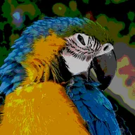

Posteriseren

Verdeelt elk kleurkanaal in een aantal vlakke Stappen, zodat vloeiende verlopen banden worden. Verschuiving verplaatst waar de randen van de banden vallen.
Instellingen
| Instelling | Type | Bereik | Standaard |
|---|---|---|---|
| Stappen | Getal | 2 tot 255 | 10 |
| Verschuiving | Getal | -1 tot 1 | 0 |
| Stijl | Keuze | Klassiek, Standaard | Klassiek |